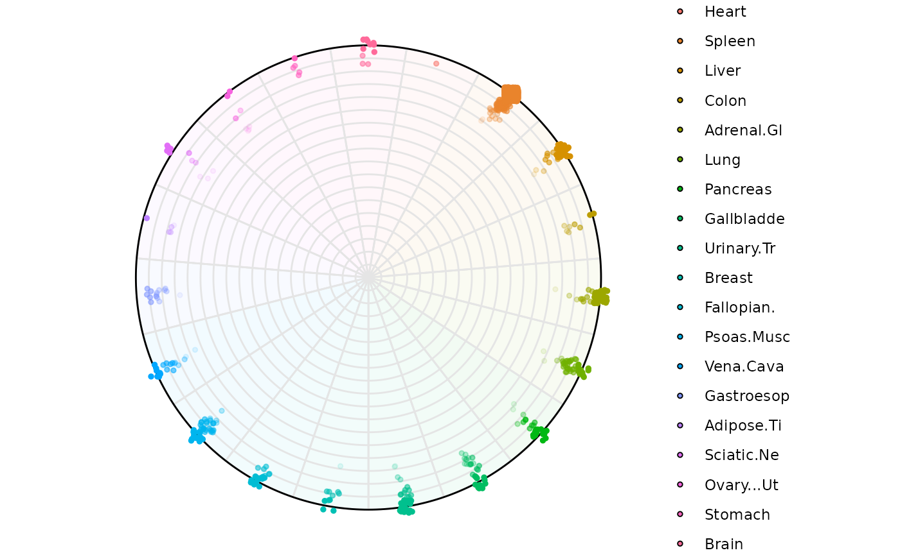
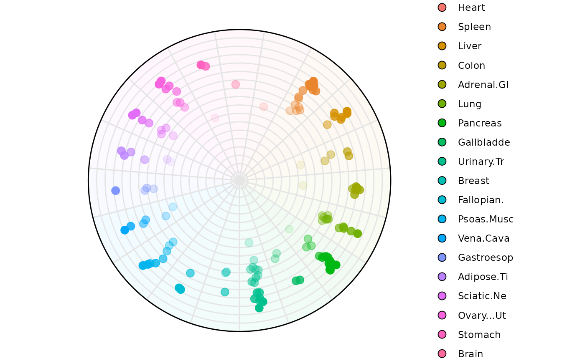
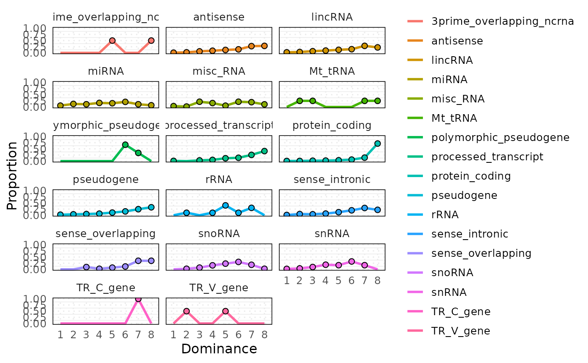

Dominance plot in 2 to N dimensions
Source:vignettes/articles/Dominance-plot-in-2-to-N-dimensions.Rmd
Dominance-plot-in-2-to-N-dimensions.RmdData
The data used in this article comes from two different sources:
- A
SummarizedExperimentobject from the libraryairway - A
data.frameretrieved from the supplementary librarydominatRData
The purpose of using two different sources is meant to show the capacity of dominatR to process different objects.
### summarized experiment
data("airway")
se <-airway
#Let's normalize the se object and subset
set.seed(123)
se <- cpm_normalization(se, log_trans = FALSE, new_assay_name = 'cpm_norm')
idx <- sample(seq_len(nrow(se)), size = min(25000, nrow(se)))
se <- se[idx, ]
colnames(se) <- paste0('S', seq_len(8))
# dataframe
data("rnapol_score")
df1 = rnapol_score
df1 = df1[,5:7]
data("atac_tissue_score")
df2 = atac_tissue_scoreVisualization Functions
Visual representation is essential for interpreting the structure, dominance, and variability of features across samples or conditions.
Our package offers a collection of entropy-based visualization functions designed for different analytical perspectives:
plot_rope()
Compares two numeric vectors using a central “rope” layout to visualize dominance asymmetry and entropy filtering.plot_triangle()
Visualizes three variables in a ternary layout, highlighting balance or dominance among triplets.plot_circle()
Displays each sample’s entropy and average magnitude in a polar coordinate layout.plot_circle_frequency()
Summarizes the density of entropy-magnitude bins using circular heat segments.
Let’s now explore each visualization function with real data examples.
plot_rope(): Rope Plot for Binary Feature Dominance
This function compares two numeric vectors (e.g., expression in Condition A vs. B) using a “rope-like” 1D dominance visualization. Each sample is classified by its relative dominance, optionally filtered by entropy or magnitude thresholds.
This function is ideal for:
- Comparing two groups of measurements across matched samples or features.
Using a Summarized Experiment
Using the se object and selecting two columns. By default the function considers all the possible entropy values and magnitude values.
Basic Usage
sample1 <- "S1"
sample2 <- "S2"
res_rope <- plot_rope(
x = se,
push_text = 1.2,
col = c('#7eb1d5', '#fa8451'),
column_name = c(sample1, sample2), assay_name = 'cpm_norm'
) The points that locate at the center of the rope, are those shared
across both variables. As the points start moving towards the end of the
rope, feature dominance is appreciated by the respective variable
The points that locate at the center of the rope, are those shared
across both variables. As the points start moving towards the end of the
rope, feature dominance is appreciated by the respective variable
The following aesthetics can be modified:
rope_widhtrope_colorrope_bordercolcol_bgpchpch_bgcextitle
Now let’s explore the features the plotting function offers.
Example 1: Low entropy
Considering observations with low entropy (High Dominance) and any
level of expression. Adding a title to the plot and changing the colors
for the observations. The observations that fall outside of this range
will be colored with col_bg which by default is
whitesmoke
res_rope = plot_rope(
x = se,
push_text = 1.2,
column_name = c(sample1, sample2),
col = c('#7eb1d5', '#fa8451'),
entropyrange = c(0, 0.1),
maxvaluerange = c(0.1, Inf),
assay_name = 'cpm_norm'
)
title(main = "SE Input: Low Entropy", font.main = 1)
Example 2: Medium entropy
res_rope = plot_rope(
x = se,
push_text = 1.2,
column_name = c(sample1, sample2),
col = c('#7eb1d5', '#fa8451'),
entropyrange = c(0.15, 0.8),
maxvaluerange = c(0.1, Inf),
assay_name = 'cpm_norm'
)
title(main = "SE Input: Medium Entropy", font.main = 1)
Example 3: High entropy
res_rope = plot_rope(
x = se,
push_text = 1.2,
column_name = c(sample1, sample2),
col = c('#7eb1d5', '#fa8451'),
entropyrange = c(0.8, 1),
maxvaluerange = c(0.1, Inf),
assay_name = 'cpm_norm'
)
title(main = "SE Input: High Entropy", font.main = 1)
Example 4: Retrieve output data
Data retrieval can be achieved by modifying the attribute
output_table . The data contains information used for the
plotting (This applies for any data structure used)
a,b
The original values from each of the two input columns usedcomx,comy
The computed Cartesian coordinates for each point on the “rope”.color
The fill color (as a string) actually used for that point.entropy
The Shannon entropy score for that feature across all columns.maxvalue
The mean (or maximum) expression value used to scale point size (or filter).
res_rope = plot_rope(
x = se,
push_text = 1.2,
column_name = c(sample1, sample2),
output_table = TRUE,
col = c('#7eb1d5', '#fa8451'),
entropyrange = c(0.8, 1),
maxvaluerange = c(0, Inf),
assay_name = 'cpm_norm'
)
head(res_rope)
#> a b comx comy color
#> ENSG00000260166 0.00000000 0.00000000 0.00000000 -0.0140 whitesmoke
#> ENSG00000266931 0.00000000 0.00000000 0.00000000 0.0785 whitesmoke
#> ENSG00000104774 93.95303443 101.33187620 0.03778501 0.0370 #fa8451
#> ENSG00000267583 0.00000000 0.05316468 1.00000000 -0.1650 whitesmoke
#> ENSG00000227581 0.04845438 0.00000000 -1.00000000 -0.2420 whitesmoke
#> ENSG00000227317 0.00000000 0.00000000 0.00000000 0.2190 whitesmoke
#> maxvalue entropy
#> ENSG00000260166 0.00000000 0.0000000
#> ENSG00000266931 0.00000000 0.0000000
#> ENSG00000104774 101.33187620 0.9989699
#> ENSG00000267583 0.05316468 0.0000000
#> ENSG00000227581 0.04845438 0.0000000
#> ENSG00000227317 0.00000000 0.0000000Using a matrix or data.frame input
Basic Usage
sample1 = 'pol1'
sample2 = 'pol2'
res_rope = plot_rope(
x = df1,
push_text = 1.2,
col = c('#a9c4d6', '#ffc9b3'),
column_name = c(sample1, sample2),
)
title(main = 'Basic Usage')
Example 1. Low entropy filtering (0-0.1)
res_rope = plot_rope(
x = df1,
column_name = c(sample1, sample2),
push_text = 1.2,
col = c('#a9c4d6', '#ffc9b3'),
entropyrange = c(0, 0.1),
)
title(main = 'Low Entropy Filtering')
Example 2. High entropy filtering (0.8-1)
res_rope = plot_rope(
x = df1,
column_name = c(sample1, sample2),
push_text = 1.2,
col = c('#a9c4d6', '#ffc9b3'),
entropyrange = c(0.8, 1),
)
title(main = 'High Entropy Filtering')### Miscellaneous
Changing aesthetics attributes
res_rope = plot_rope(
x = df1,
column_name = c(sample1, sample2),
rope_color = 'white',
col = c('#001052', '#fa4c07'),
col_bg = 'gray',
pch_bg = 2,
pch = c(10, 18),
entropyrange = c(0, 0.5),
)
title(main = 'Modifying Attributes')
plot_triangle(): Ternary Plot for Three-Way Feature Relationships
This function visualizes three-part compositions (e.g., condition A/B/C contributions) on a ternary plot. Useful when analyzing data with three mutually exclusive categories or proportions summing to one.
This function is ideal for:
Displaying relationships between three mutually exclusive components.
Exploring feature allocation among three sources or pathways (e.g., tissue A/B/C).
Identifying samples/features located at edge or center of triangular composition space.
Using a matrix or data.frame input
Basic Usage
samples <- c('pol1', 'pol2', 'pol3')
res_t = plot_triangle(
x = df1,
column_name = samples,
pch = 21,
push_text = 1.3,
col = c('#ff80e3', '#7eb1d5', '#fa8451')
)
title(main = 'Basic Usage', font.main = 1, cex = 0.5)The points that locate at the center of the circle are those shared across three variables. As the points start moving towards the edges of the triangle they are dominated by one particular variable. Points that line over the perimeter of the triangle display shareness between the two variable those points are closer to.
The following aesthetics can be modified:
background_colorcexpchcol
Now let’s explore the features the plotting function offers.
Example 1. Low Entropy Genes (0-0.4)
res_t = plot_triangle(
x = df1,
column_name = samples,
pch = 21,
push_text = 1.3,
col = c('#ff80e3', '#7eb1d5', '#fa8451'),
entropyrange = c(0, 0.4)
)
title(main = 'Low Entropy Genes', font.main = 1, cex = 0.5)
Example 2. Medium Entropy Genes (0.4-1.3)
res_t = plot_triangle(
x = df1,
column_name = samples,
pch = 21,
push_text = 1.3,
col = c('#ff80e3', '#7eb1d5', '#fa8451'),
entropyrange = c(0.4, 1.3)
)
title(main = 'Medium Entropy Genes', font.main = 1, cex = 0.5)Example 3. High Entropy Genes (1.3-Inf)
res_t = plot_triangle(
x = df1,
column_name = samples,
pch = 21,
push_text = 1.3,
col = c('#ff80e3', '#7eb1d5', '#fa8451'),
entropyrange = c(1.3, Inf)
)
title(main = 'High Entropy Genes', font.main = 1, cex = 0.5)
Example 4. High Entropy + Magnitude range (5-Inf)
res_t = plot_triangle(
x = df1,
column_name = samples,
pch = 21,
push_text = 1.3,
col = c('#ff80e3', '#7eb1d5', '#fa8451'),
entropyrange = c(1.3, Inf),
maxvaluerange = c(5, Inf)
)
title(main = 'High Entropy Genes + Magnitude range', font.main = 1, cex = 0.5)
Example 5. Remove Background Points
When setting plotAll = FALSE the function will remove
all the points that fall outside of entropyrange and
maxvaluerange
res_t <- plot_triangle(
x = df1,
column_name = samples,
pch = 21,
push_text = 1.3,
col = c('#ff80e3', '#7eb1d5', '#fa8451'),
entropyrange = c(1.3, Inf),
maxvaluerange = c(5, Inf),
plotAll = FALSE
)
title(main = 'Removing genes out of range', font.main = 1, cex = 0.5)
Using a SummarizedExperiment object
The function can use any assay, the user should specify the name of this assay, if name is not specified by default it will look for the first assay in the se object
Basic Usage
samples = c('S1','S2','S3')
res_t <- plot_triangle(
x = se,
col = c('#7eb1d5','#ff80e3', '#fa8451'),
column_name = samples,
assay_name = 'cpm_norm',
pch = 21,
push_text = 1.3,
)
title(main = 'Basic Usage SE', font.main = 1, cex = 0.5)Example 1. Low entropy (0-0.4)
res_t <- plot_triangle(
x = se,
col = c('#7eb1d5','#ff80e3', '#fa8451'),
column_name = samples,
assay_name = 'cpm_norm',
entropyrange = c(0, 0.4),
maxvaluerange = c(0.1, Inf),
pch = 21,
push_text = 1.3,
)
title(main = 'Low entropy SE', font.main = 1, cex = 0.5)
Example 4. Output Data Retrieval
Data retrieval can be achieved by modifying the attribute
output_table . The data contains information used for the
plotting (This applies for any data structure used)
max_countsThe maximum normalized expression value (across your selected samples) for that feature.comxcomy
The x– and y–coordinates used to place that point inside the triangle.color
Which of your provided colors was applied (one per sample), orwhitesmokefor filtered points.entropy
The Shannon entropy score for that feature across all columns.
res_t <- plot_triangle(
x = se,
col = c('#7eb1d5','#ff80e3', '#fa8451'),
column_name = samples,
assay_name = 'cpm_norm',
entropyrange = c(0, 0.4),
maxvaluerange = c(0.1, Inf),
pch = 21,
push_text = 1.3,
output_table = TRUE
)
# View first 6 rows of the output data
head(res_t)
#> max_counts comx comy a b
#> ENSG00000260166 0.00000000 0.00000000 0.000000000 0.0000000 0.0000000
#> ENSG00000266931 0.00000000 0.00000000 0.000000000 0.0000000 0.0000000
#> ENSG00000104774 101.33187620 0.03283081 -0.006864875 0.3287567 0.3545765
#> ENSG00000267583 0.05316468 0.86602540 -0.500000000 0.0000000 1.0000000
#> ENSG00000227581 0.04845438 0.00000000 1.000000000 1.0000000 0.0000000
#> ENSG00000227317 0.00000000 0.00000000 0.000000000 0.0000000 0.0000000
#> c Entropy color
#> ENSG00000260166 0.0000000 0.000000 whitesmoke
#> ENSG00000266931 0.0000000 0.000000 whitesmoke
#> ENSG00000104774 0.3166667 1.583349 whitesmoke
#> ENSG00000267583 0.0000000 0.000000 whitesmoke
#> ENSG00000227581 0.0000000 0.000000 whitesmoke
#> ENSG00000227317 0.0000000 0.000000 whitesmokeplot_circle: Entropy-Magnitude Circle Plot
This function visualizes high-dimensional input with any number of dimensions
Using a polar coordinate system where: - Radial position represents Shannon entropy degrees.
-
A total of P-1 (P = Number of Variables) circles are plotted and they represent degrees of dominance.
The outermost circle represents observations that are dominated only by one variable.
The second outermost circle represents observations that are dominated by two variables.
The innermost circle represents observations that are uniform across all variables.
This function is ideal for:
Visualizing multidimensional datasets (samples × features) in an interpretable 2D circular space.
Detecting samples/features with high entropy (irregularity) or high average expression.
Facilitating compact visualization across thousands of rows or columns.
Basic Understanding:
Dominant Sample: Shows which sample has the highest expression for each gene Useful for identifying sample-specific expression patterns
Radial Position: Genes near edge: Highly specific to one sample (low entropy) Genes near center: Similar expression across samples (high entropy)
Sector Position: Each wedge represents a sample Genes in a sample’s wedge have their highest expression in that sample
### Let's select only numerical columns
df2 = atac_tissue_score[,c(1,8:26)]
rownames(df2) = atac_tissue_score$GeneThe circle_plot function is able to handle
SummarizedExperiment objects, data.frames and matrices just like the
previous plots.
Note: there is some randomization in the assignment of the points in the space when a specific gene/observation is shared across many variables. In that way for example, if gene_abc is shared across tissue A, B, C and D, the function will randomly choose a variable for plotting
Using a dataframe
plot_circle(
x = df2,
n = 19,
entropyrange = c(0,Inf),
magnituderange = c(1, Inf),
label = 'legend',
output_table = F,
assay_name = 'cpm_norm'
)Using a SummarizedExperiment input
plot_circle(
x = se,
n = 8,
entropyrange = c(0,Inf),
magnituderange = c(0.1, Inf),
label = 'legend',
output_table = FALSE,
assay_name = 'cpm_norm'
)The following aesthetics can be modified:
background_polygonbackground_na_polygonbackground_alpha_polygonpoint_sizepoint_fill_colorspoint_fill_na_colorspoint_line_colorspoint_line_na_colorsstraight_pointsline_colout_linetext_label_curve_sizelabel
Now let’s explore the features the plotting function offers using the
our dataframe. The same plots can be made when using an
SummarizedExperiment. Please see the examples for the
plot_circle function ?plot_circle
Example 1: Low-entropy filtering (0-1)
Highlighting genes with low Entropy (high dominance in one variable)
plot_circle(
x = df2,
n = 19,
entropyrange = c(0, 2),
magnituderange = c(1, Inf),
label = 'legend',
output_table = FALSE
)
Highlighting samples is possible too. Lets highlight variable
Brain, Lung, Liver. The names
will appear around the circle if label = 'curve' and only
those points and areas will be colored
plot_circle(
x = df2,
n = 19,
entropyrange = c(0, 2),
magnituderange = c(1, Inf),
label = 'legend',
variables_highlight = c('Brain', 'Lung', 'Liver', 'Breast'),
output_table = FALSE,
background_polygon = c('Brain' = '#7eb1d5', 'Lung' = 'gold',
'Liver' = 'indianred', 'Breast' = '#ff80e3'),
point_fill_colors = c('Brain' = '#7eb1d5', 'Lung' = 'gold',
'Liver' = 'indianred', 'Breast' = '#ff80e3'),
background_alpha_polygon = 0.1,
point_size = 2,
point_line_colors = c('Brain' = 'black', 'Lung' = 'black',
'Liver' = 'black', 'Breast' = 'black')
)
Example 3: High-entropy filtering (2-3)
plot_circle(
x = df2,
n = 19,
entropyrange = c(2, 3.5),
magnituderange = c(1, Inf),
label = 'legend',
output_table = FALSE,
point_size = 3
)
Example 4: Grouping by a column factor ‘Category’
plot_circle(
x = df2,
n = 19,
entropyrange = c(0, Inf),
magnituderange = c(1, Inf),
column_variable_factor = 'core_type',
label = 'curve',
output_table = FALSE,
point_size = 3
)Let’s highlight only a specific and spread the points
plot_circle(
x = df2,
n = 19,
entropyrange = c(0, Inf),
magnituderange = c(1, Inf),
column_variable_factor = 'core_type',
label = 'curve',
output_table = FALSE,
point_size = 3,
straight_points = FALSE,
point_fill_colors = c('Specific' = '#fa8451', '75% Tissues' = '#7eb1d5'),
point_line_colors = c('Specific' = '#fa8451', '75% Tissues' = '#7eb1d5'),
)
In this way it is possible to color observations by a specific category. In this example, we are highlighting RNA Pol III transcribed genes that have low uniformity across tissues (aka = Specific) which locate at the edge of the circle. We are also highlighting those genes with high uniformity across tissues (aka = 75% Tissues) which locate at the center of the circle
Example 7: Retrieving plot data from SE
results <- plot_circle(
x = df2,
n = 19,
entropyrange = c(0, Inf),
magnituderange = c(1, Inf),
column_variable_factor = 'core_type',
label = 'curve',
output_table = TRUE,
point_size = 3,
straight_points = FALSE
)The result is a list of two objects:
-
results[[1]]: aggplot2object for visualization -
results[[2]]: adata.framewith entropy, magnitude, etc.
results[[1]]
head(results[[2]])
#> Factor Entropy col
#> tRNA-Gly-GCC-1-3&&100172 75% Tissues 4.247928 Gastroesop
#> Metazoa_SRP_SRP_RNA_URS0000972307&&100175 Specific 0.000000 Spleen
#> tRNA-Val-CAC-1-4&&10049 75% Tissues 4.247928 Adrenal.Gl
#> tRNA-Glu-TTC-3-1&&10055 75% Tissues 4.247928 Spleen
#> tRNA-Asn-GTT-1-6&&10056 75% Tissues 4.247928 Liver
#> tRNA-Gly-TCC-4-1&&10058 75% Tissues 4.247928 Brain
#> rad deg
#> tRNA-Gly-GCC-1-3&&100172 1.421085e-14 -3.05891916
#> Metazoa_SRP_SRP_RNA_URS0000972307&&100175 1.000000e+02 0.90940840
#> tRNA-Val-CAC-1-4&&10049 1.421085e-14 -0.08267349
#> tRNA-Glu-TTC-3-1&&10055 1.421085e-14 0.90940840
#> tRNA-Asn-GTT-1-6&&10056 1.421085e-14 0.57871444
#> tRNA-Gly-TCC-4-1&&10058 1.421085e-14 -4.71238898
#> x y
#> tRNA-Gly-GCC-1-3&&100172 -1.416351e-14 -1.159068e-15
#> Metazoa_SRP_SRP_RNA_URS0000972307&&100175 6.134069e+01 7.897670e+01
#> tRNA-Val-CAC-1-4&&10049 1.417034e-14 -1.072310e-15
#> tRNA-Glu-TTC-3-1&&10055 8.648143e-15 1.127644e-14
#> tRNA-Asn-GTT-1-6&&10056 1.192059e-14 7.736136e-15
#> tRNA-Gly-TCC-4-1&&10058 -4.351330e-17 1.421079e-14
#> labels rand_deg alpha
#> tRNA-Gly-GCC-1-3&&100172 Gastroesop -3.05993982 0.7764249
#> Metazoa_SRP_SRP_RNA_URS0000972307&&100175 Spleen 0.91042906 1.0000000
#> tRNA-Val-CAC-1-4&&10049 Adrenal.Gl -0.07552887 0.7764249
#> tRNA-Glu-TTC-3-1&&10055 Spleen 0.91655302 0.7764249
#> tRNA-Asn-GTT-1-6&&10056 Liver 0.57565246 0.7764249
#> tRNA-Gly-TCC-4-1&&10058 Brain -4.70932700 0.7764249The returned data frame (se_results[[2]]) contains the
following columns:
Entropy: the entropy score computed across rows (for each sample or feature).
col: the dominant sample allocated for that gene in the plotting space. When an observation is tied among variables, a random variable is chosen
rad: the magnitude (mean expression) encoded as the radial distance in the plot.
deg: the plotting angle (in radians) for each sample’s axis.
x, y: the Cartesian coordinates corresponding to
(rad, deg), used internally bygeom_point().labels: the text labels (e.g. sample names) when
label = "legend"orvariables_highlightis set.rand_deg: the random rotation offset (fixed if you call
set.seed()beforehand).alpha: the point transparency (
1for highlighted points, otherwise equal to yourbackground_alpha_polygonsetting).
plot_circle_frequency(): Frequency-Stratified Entropy-Magnitude Visualization
This function builds upon plot_circle() by stratifying samples into frequency bins and visualizing entropy-magnitude patterns for each bin separately. Useful when your dataset contains variables/features with different levels of occurrence or sparsity (e.g., expressed vs. non-expressed genes).
This function is ideal for:
Identifying highly prevalent genes/features across a cohort.
Screening for outlier or inactive variables.
Visually comparing distributions in a compact format.
Using a SummarizedExperiment object
# Creating the circle plot data
# First we create the circle plot with output_table = TRUE to get
# the data needed for the frequency plot. We'll use gene biotype as our
# factor variable.
circle_data <- plot_circle(
x = se,
n = 8,
column_variable_factor = 'gene_biotype',
entropyrange = c(0, Inf),
magnituderange = c(0.1, Inf),
label = 'legend',
output_table = TRUE,
assay_name = 'cpm_norm'
)Example 1: Default parameters (combined panel)
freq_plot_default <- plot_circle_frequency(
n = 8,
circle = circle_data,
single = TRUE,
legend = TRUE,
numb_columns = 1,
filter_class = NULL,
point_size = 2
)
# Display the plot
freq_plot_default[[1]]
# View aggregated data
head(freq_plot_default[[2]])
#> bin Factor n proportion
#> 1 1 3prime_overlapping_ncrna 0 0.0
#> 2 2 3prime_overlapping_ncrna 0 0.0
#> 3 3 3prime_overlapping_ncrna 0 0.0
#> 4 4 3prime_overlapping_ncrna 0 0.0
#> 5 5 3prime_overlapping_ncrna 2 0.5
#> 6 6 3prime_overlapping_ncrna 0 0.0Example 2: Faceted by factor
# Visualize each factor level in separate panels
plot_circle_frequency(
n = 8,
circle = circle_data,
single = FALSE,
legend = TRUE,
numb_columns = 3, # Arrange in 3 columns
filter_class = NULL,
point_size = 2
)
#> $plot_stat
#>
#> $data
#> bin Factor n proportion
#> 1 1 3prime_overlapping_ncrna 0 0.000000000
#> 2 2 3prime_overlapping_ncrna 0 0.000000000
#> 3 3 3prime_overlapping_ncrna 0 0.000000000
#> 4 4 3prime_overlapping_ncrna 0 0.000000000
#> 5 5 3prime_overlapping_ncrna 2 0.500000000
#> 6 6 3prime_overlapping_ncrna 0 0.000000000
#> 7 7 3prime_overlapping_ncrna 0 0.000000000
#> 8 8 3prime_overlapping_ncrna 2 0.500000000
#> 9 1 antisense 7 0.008373206
#> 10 2 antisense 18 0.021531100
#> 11 3 antisense 51 0.061004785
#> 12 4 antisense 73 0.087320574
#> 13 5 antisense 100 0.119617225
#> 14 6 antisense 120 0.143540670
#> 15 7 antisense 229 0.273923445
#> 16 8 antisense 238 0.284688995
#> 17 1 lincRNA 17 0.021383648
#> 18 2 lincRNA 28 0.035220126
#> 19 3 lincRNA 54 0.067924528
#> 20 4 lincRNA 74 0.093081761
#> 21 5 lincRNA 99 0.124528302
#> 22 6 lincRNA 119 0.149685535
#> 23 7 lincRNA 227 0.285534591
#> 24 8 lincRNA 177 0.222641509
#> 25 1 miRNA 4 0.055555556
#> 26 2 miRNA 9 0.125000000
#> 27 3 miRNA 8 0.111111111
#> 28 4 miRNA 12 0.166666667
#> 29 5 miRNA 11 0.152777778
#> 30 6 miRNA 15 0.208333333
#> 31 7 miRNA 8 0.111111111
#> 32 8 miRNA 5 0.069444444
#> 33 1 misc_RNA 2 0.035714286
#> 34 2 misc_RNA 1 0.017857143
#> 35 3 misc_RNA 12 0.214285714
#> 36 4 misc_RNA 9 0.160714286
#> 37 5 misc_RNA 3 0.053571429
#> 38 6 misc_RNA 12 0.214285714
#> 39 7 misc_RNA 11 0.196428571
#> 40 8 misc_RNA 6 0.107142857
#> 41 1 Mt_tRNA 0 0.000000000
#> 42 2 Mt_tRNA 1 0.250000000
#> 43 3 Mt_tRNA 1 0.250000000
#> 44 4 Mt_tRNA 0 0.000000000
#> 45 5 Mt_tRNA 0 0.000000000
#> 46 6 Mt_tRNA 0 0.000000000
#> 47 7 Mt_tRNA 1 0.250000000
#> 48 8 Mt_tRNA 1 0.250000000
#> 49 1 polymorphic_pseudogene 0 0.000000000
#> 50 2 polymorphic_pseudogene 0 0.000000000
#> 51 3 polymorphic_pseudogene 0 0.000000000
#> 52 4 polymorphic_pseudogene 0 0.000000000
#> 53 5 polymorphic_pseudogene 0 0.000000000
#> 54 6 polymorphic_pseudogene 2 0.666666667
#> 55 7 polymorphic_pseudogene 1 0.333333333
#> 56 8 polymorphic_pseudogene 0 0.000000000
#> 57 1 processed_transcript 1 0.009708738
#> 58 2 processed_transcript 0 0.000000000
#> 59 3 processed_transcript 3 0.029126214
#> 60 4 processed_transcript 5 0.048543689
#> 61 5 processed_transcript 12 0.116504854
#> 62 6 processed_transcript 14 0.135922330
#> 63 7 processed_transcript 26 0.252427184
#> 64 8 processed_transcript 42 0.407766990
#> 65 1 protein_coding 31 0.005099523
#> 66 2 protein_coding 45 0.007402533
#> 67 3 protein_coding 100 0.016450074
#> 68 4 protein_coding 126 0.020727093
#> 69 5 protein_coding 207 0.034051653
#> 70 6 protein_coding 370 0.060865274
#> 71 7 protein_coding 858 0.141141635
#> 72 8 protein_coding 4342 0.714262214
#> 73 1 pseudogene 29 0.020999276
#> 74 2 pseudogene 50 0.036205648
#> 75 3 pseudogene 65 0.047067343
#> 76 4 pseudogene 89 0.064446054
#> 77 5 pseudogene 148 0.107168718
#> 78 6 pseudogene 215 0.155684287
#> 79 7 pseudogene 339 0.245474294
#> 80 8 pseudogene 446 0.322954381
#> 81 1 rRNA 0 0.000000000
#> 82 2 rRNA 1 0.100000000
#> 83 3 rRNA 0 0.000000000
#> 84 4 rRNA 1 0.100000000
#> 85 5 rRNA 4 0.400000000
#> 86 6 rRNA 1 0.100000000
#> 87 7 rRNA 3 0.300000000
#> 88 8 rRNA 0 0.000000000
#> 89 1 sense_intronic 1 0.009523810
#> 90 2 sense_intronic 5 0.047619048
#> 91 3 sense_intronic 4 0.038095238
#> 92 4 sense_intronic 7 0.066666667
#> 93 5 sense_intronic 13 0.123809524
#> 94 6 sense_intronic 21 0.200000000
#> 95 7 sense_intronic 31 0.295238095
#> 96 8 sense_intronic 23 0.219047619
#> 97 1 sense_overlapping 0 0.000000000
#> 98 2 sense_overlapping 0 0.000000000
#> 99 3 sense_overlapping 4 0.093023256
#> 100 4 sense_overlapping 1 0.023255814
#> 101 5 sense_overlapping 3 0.069767442
#> 102 6 sense_overlapping 5 0.116279070
#> 103 7 sense_overlapping 15 0.348837209
#> 104 8 sense_overlapping 15 0.348837209
#> 105 1 snoRNA 0 0.000000000
#> 106 2 snoRNA 1 0.023255814
#> 107 3 snoRNA 3 0.069767442
#> 108 4 snoRNA 7 0.162790698
#> 109 5 snoRNA 10 0.232558140
#> 110 6 snoRNA 13 0.302325581
#> 111 7 snoRNA 8 0.186046512
#> 112 8 snoRNA 1 0.023255814
#> 113 1 snRNA 1 0.018867925
#> 114 2 snRNA 2 0.037735849
#> 115 3 snRNA 5 0.094339623
#> 116 4 snRNA 10 0.188679245
#> 117 5 snRNA 9 0.169811321
#> 118 6 snRNA 17 0.320754717
#> 119 7 snRNA 9 0.169811321
#> 120 8 snRNA 0 0.000000000
#> 121 1 TR_C_gene 0 0.000000000
#> 122 2 TR_C_gene 0 0.000000000
#> 123 3 TR_C_gene 0 0.000000000
#> 124 4 TR_C_gene 0 0.000000000
#> 125 5 TR_C_gene 0 0.000000000
#> 126 6 TR_C_gene 0 0.000000000
#> 127 7 TR_C_gene 1 1.000000000
#> 128 8 TR_C_gene 0 0.000000000
#> 129 1 TR_V_gene 0 0.000000000
#> 130 2 TR_V_gene 1 0.500000000
#> 131 3 TR_V_gene 0 0.000000000
#> 132 4 TR_V_gene 0 0.000000000
#> 133 5 TR_V_gene 1 0.500000000
#> 134 6 TR_V_gene 0 0.000000000
#> 135 7 TR_V_gene 0 0.000000000
#> 136 8 TR_V_gene 0 0.000000000Example 3: Filtering specific classes
# Focus on specific gene biotypes
plot_circle_frequency(
n = 8,
circle = circle_data,
single = FALSE,
legend = TRUE,
numb_columns = 1,
filter_class = c('protein_coding', 'snoRNA'),
point_size = 3
)
#> $plot_stat#>
#> $data
#> bin Factor n proportion
#> 65 1 protein_coding 31 0.005099523
#> 66 2 protein_coding 45 0.007402533
#> 67 3 protein_coding 100 0.016450074
#> 68 4 protein_coding 126 0.020727093
#> 69 5 protein_coding 207 0.034051653
#> 70 6 protein_coding 370 0.060865274
#> 71 7 protein_coding 858 0.141141635
#> 72 8 protein_coding 4342 0.714262214
#> 105 1 snoRNA 0 0.000000000
#> 106 2 snoRNA 1 0.023255814
#> 107 3 snoRNA 3 0.069767442
#> 108 4 snoRNA 7 0.162790698
#> 109 5 snoRNA 10 0.232558140
#> 110 6 snoRNA 13 0.302325581
#> 111 7 snoRNA 8 0.186046512
#> 112 8 snoRNA 1 0.023255814Example 4: Combined plot with custom filtering
# Create a combined plot showing only selected classes
plot_circle_frequency(
n = 8,
circle = circle_data,
single = TRUE,
legend = TRUE,
numb_columns = 1,
filter_class = c('protein_coding', 'snoRNA'),
point_size = 3
)
#> $plot_stat
#>
#> $data
#> bin Factor n proportion
#> 65 1 protein_coding 31 0.005099523
#> 66 2 protein_coding 45 0.007402533
#> 67 3 protein_coding 100 0.016450074
#> 68 4 protein_coding 126 0.020727093
#> 69 5 protein_coding 207 0.034051653
#> 70 6 protein_coding 370 0.060865274
#> 71 7 protein_coding 858 0.141141635
#> 72 8 protein_coding 4342 0.714262214
#> 105 1 snoRNA 0 0.000000000
#> 106 2 snoRNA 1 0.023255814
#> 107 3 snoRNA 3 0.069767442
#> 108 4 snoRNA 7 0.162790698
#> 109 5 snoRNA 10 0.232558140
#> 110 6 snoRNA 13 0.302325581
#> 111 7 snoRNA 8 0.186046512
#> 112 8 snoRNA 1 0.023255814Output interpretation
Each arc segment represents:
A variable (e.g., gene), sorted by frequency.
Arc height indicates proportion of samples above threshold.
The returned table includes:
Variable: variable name (e.g., gene ID)
Proportion: % of samples with value above threshold
Threshold: cutoff used
Rank: position in sorted list
Session Info
#> R version 4.5.2 (2025-10-31)
#> Platform: x86_64-pc-linux-gnu
#> Running under: Ubuntu 24.04.3 LTS
#>
#> Matrix products: default
#> BLAS: /usr/lib/x86_64-linux-gnu/openblas-pthread/libblas.so.3
#> LAPACK: /usr/lib/x86_64-linux-gnu/openblas-pthread/libopenblasp-r0.3.26.so; LAPACK version 3.12.0
#>
#> locale:
#> [1] LC_CTYPE=C.UTF-8 LC_NUMERIC=C LC_TIME=C.UTF-8
#> [4] LC_COLLATE=C.UTF-8 LC_MONETARY=C.UTF-8 LC_MESSAGES=C.UTF-8
#> [7] LC_PAPER=C.UTF-8 LC_NAME=C LC_ADDRESS=C
#> [10] LC_TELEPHONE=C LC_MEASUREMENT=C.UTF-8 LC_IDENTIFICATION=C
#>
#> time zone: UTC
#> tzcode source: system (glibc)
#>
#> attached base packages:
#> [1] stats4 stats graphics grDevices utils datasets methods
#> [8] base
#>
#> other attached packages:
#> [1] ggplot2_4.0.1 dominatRData_0.99.1
#> [3] airway_1.30.0 SummarizedExperiment_1.40.0
#> [5] Biobase_2.70.0 GenomicRanges_1.62.0
#> [7] Seqinfo_1.0.0 IRanges_2.44.0
#> [9] S4Vectors_0.48.0 BiocGenerics_0.56.0
#> [11] generics_0.1.4 MatrixGenerics_1.22.0
#> [13] matrixStats_1.5.0 dominatR_0.99.5
#>
#> loaded via a namespace (and not attached):
#> [1] sass_0.4.10 SparseArray_1.10.1 stringi_1.8.7
#> [4] lattice_0.22-7 digest_0.6.38 magrittr_2.0.4
#> [7] RColorBrewer_1.1-3 evaluate_1.0.5 grid_4.5.2
#> [10] fastmap_1.2.0 jsonlite_2.0.0 Matrix_1.7-4
#> [13] ggnewscale_0.5.2 scales_1.4.0 tweenr_2.0.3
#> [16] textshaping_1.0.4 jquerylib_0.1.4 abind_1.4-8
#> [19] cli_3.6.5 rlang_1.1.6 polyclip_1.10-7
#> [22] XVector_0.50.0 withr_3.0.2 cachem_1.1.0
#> [25] DelayedArray_0.36.0 yaml_2.3.10 S4Arrays_1.10.0
#> [28] tools_4.5.2 dplyr_1.1.4 vctrs_0.6.5
#> [31] R6_2.6.1 lifecycle_1.0.4 fs_1.6.6
#> [34] MASS_7.3-65 ragg_1.5.0 pkgconfig_2.0.3
#> [37] desc_1.4.3 pkgdown_2.2.0 bslib_0.9.0
#> [40] pillar_1.11.1 gtable_0.3.6 glue_1.8.0
#> [43] ggforce_0.5.0 systemfonts_1.3.1 xfun_0.54
#> [46] tibble_3.3.0 tidyselect_1.2.1 knitr_1.50
#> [49] farver_2.1.2 htmltools_0.5.8.1 labeling_0.4.3
#> [52] rmarkdown_2.30 compiler_4.5.2 S7_0.2.1
#> [55] geomtextpath_0.2.0